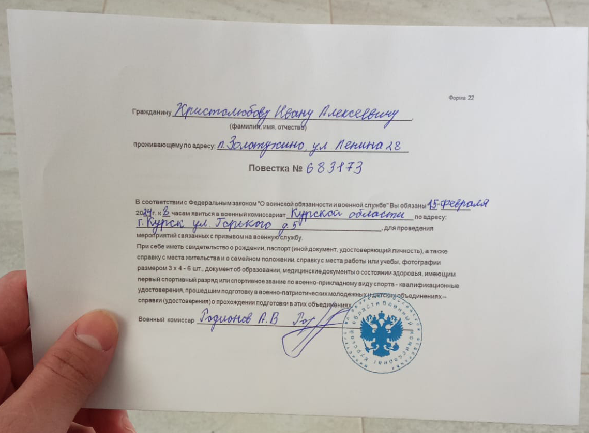
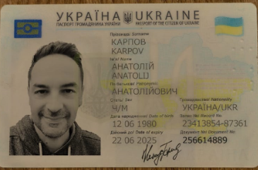
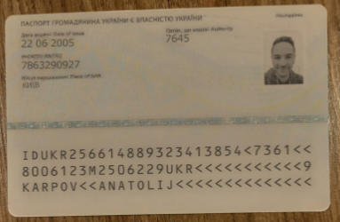
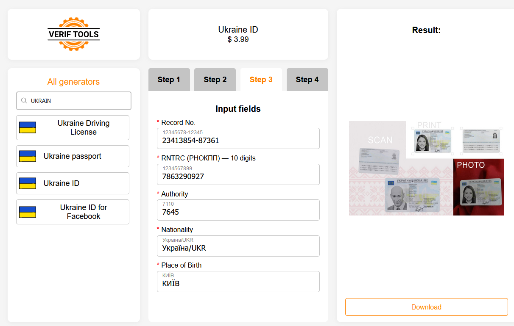

Social Media Fraud: Beware the "Deep Fake"
Social Media Fraud is a serious problem: according to the US Federal Trade Commission reported that losses due to social media scams was US$2.7 billion in 2021 alone and it represents the most significant source of contact for such scams.
Last year the Wall Street Journal had a number of articles about "Pig Butchering," the term used in the industry for organized groups that seek out unsuspecting victims and convince them to send money. Frequently, they do this via various social media outlets. While they do not restrict themselves to any specific group, they often target older people due to several factors, such as:
- They are less savvy about fake information and technology in general
- They are more likely to be socially isolated and lonely
- They are unlikely to report the scammers even if they do figure out they have been duped.
- They tend to have more disposable resources
- They are often more trusting, having not experienced growing up in a hostile social media world that makes younger people more suspicious of others on social media
Recently someone I know fitting this profile asked me to weigh in on a request from their online friend. My friend happens to be gay, and had been speaking with someone (on a gay dating application called "Scruff,") claiming to be a young gay man living in Russia. My friend showed me the pictures the young man had sent him - none of them lewd. The young man was not someone I would describe as beautiful. My friend is older, lives alone, has a modest income, and has what can only be kindly described as an "older dad body" so perhaps he liked the attention of someone younger. Their conversation went on for almost nine months before the young man was finally given what he told my friend was a "draft letter" requiring that he appear for military service:

The young man (assuming it was a young man and not one of the "pig butchers") was distraught, which is certainly understandable based upon what we've been hearing about the challenging conditions for those in the Russian military deployed on the special military operation.
The following week was a whirlwind for my friend's young man, including a physical examination and then a referral to a trained ophthalmologist to evaluate his vision issues (did I mention the young man wore thick glasses?) This led to the good news: for a fee the ophthalmologist would report that the young man's vision was below the acceptable limit and thus the young man would not be eligible for military service. The cost? A mere 300,000 rubles. In the weeks that followed the young man reported some success in raising the funds, both from his mother, his mother's friends, family, and even his own employer. However, they were still short by 127,000 rubles.
Here is where it gets interesting: my friend learned there is no way to send money to Russia at the present time due to the sanctions. When he reached out to me and explained the situation, I pointed out that Ukrainian banks cannot transfer funds to Russia, either and thus the entire affair seemed dubious. My friend shared with me the "identification" of the Ukrainian man (a "friend of the young man's mother") and it is this that led me to track down how this sort of identification was generated:


It didn't take me long to track down common elements between this identification card and the site where it was generated: Verif Tools. This is a site that will, for a few US dollars, generate various types of fake identification - not the ID itself, but an image of the ID. It was surprisingly easy to upload my own head shot and get it to create various identification documents. One of the things I found on this website, was the dead giveaway that the ID was fake:

The identifiers on this page are identical to the identifiers on the ID that my friend asked me to review. Of course, this is all part of my continuing theme that metadata can often be used to validate (or invalidate) such findings. In this case I node that the "Record Number" and the "RNTRC" field are both identical. The fact the authority, nationality, and place of birth are all identical could have been a coincidence, but those two values should be unique to the identity card.
I had to explain the news to my friend, who was (of course) hurt. After all, this had been a long-term conversation - nine months is far more time than most scammers are willing to commit.
Of course, there are other indicators of social media fraud here as well:
- Scammers adapt their tactics to exploit current events. The Ukraine/Russia conflict is well-known and creates potential situations where it is human to want to help save others from suffering. Scammers are really focused on one thing: the money.
- Money transfers via any difficult to track path are highly suspect: crypto-currency and Western Union are both common paths for such scams because they are difficult to trace and virtually impossible to recover. There are legitimate reasons to use Western Union, but any time someone you do not personally know asks to use one, it should raise serious concerns.
- Always verify the identity and intentions of anyone soliciting money online, regardless of their claimed nationality or circumstances. Scammers can be from any country and use a variety of tactics to gain trust and manipulate their victims.
Fortunately for my friend, I was able to stop this before his good-hearted nature to help someone in distress was used against him. Of course, while my suspicious nature made me skeptical, the ability to clearly identify the tools used and note that scammers are human in their willingness to be lazy to demonstrate they did use the tools were essential to "making the case" to my friend.
If you have been a victim of a social media scam, please report it to law enforcement. In the US you can report it to the Federal Trade Commission, and in Canada you can report it to the Canada Anti-Fraud Centre.